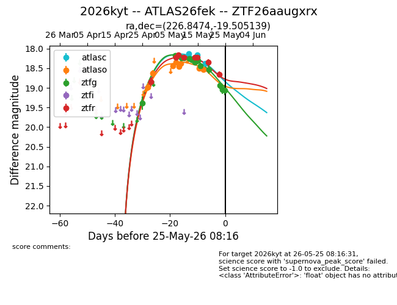
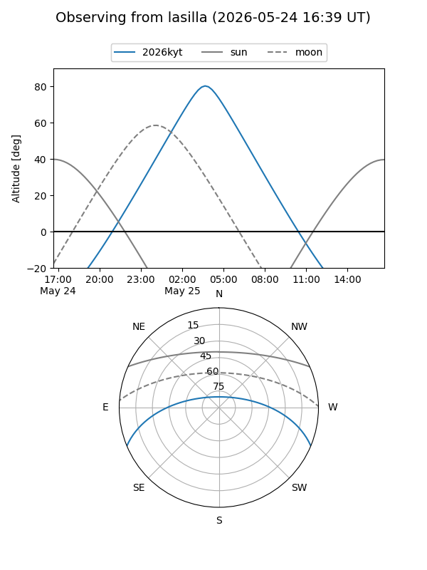
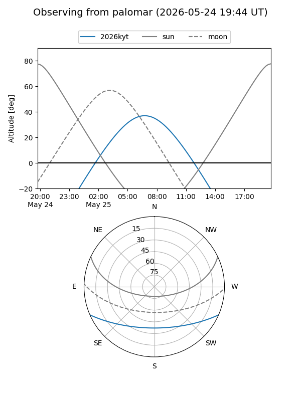

2026kyt
Target 2026kyt at 2026-05-25 08:18
Aliases and brokers:
lsst-FINK: link
lsst-Lasair: link
lsst-ALeRCE: link
ztf-FINK: link
ztf-Lasair: link
ztf-ALeRCE: link
TNS: link
YSE: link
alt names
ZTF26aaugxrx (ztf,fink_ztf)
2026kyt (tns,yse)
ATLAS26fek (atlas)
Coordinates:
equatorial (ra, dec) = 226.8474,-19.50514
equatorial (HMS+DMS) = 15:07:23.37,-19:30:18.50
galactic (l, b) = (341.8103,+32.91133)
Flags:
TNS confirmed: nan
Photometry:
last atlasc=18.37, atlaso=18.53, ztfg=19.06, ztfr=18.65
4 atlasc, 8 atlaso, 14 ztfg, 8 ztfr detections
Lightcurve

Visibility


Additional plots